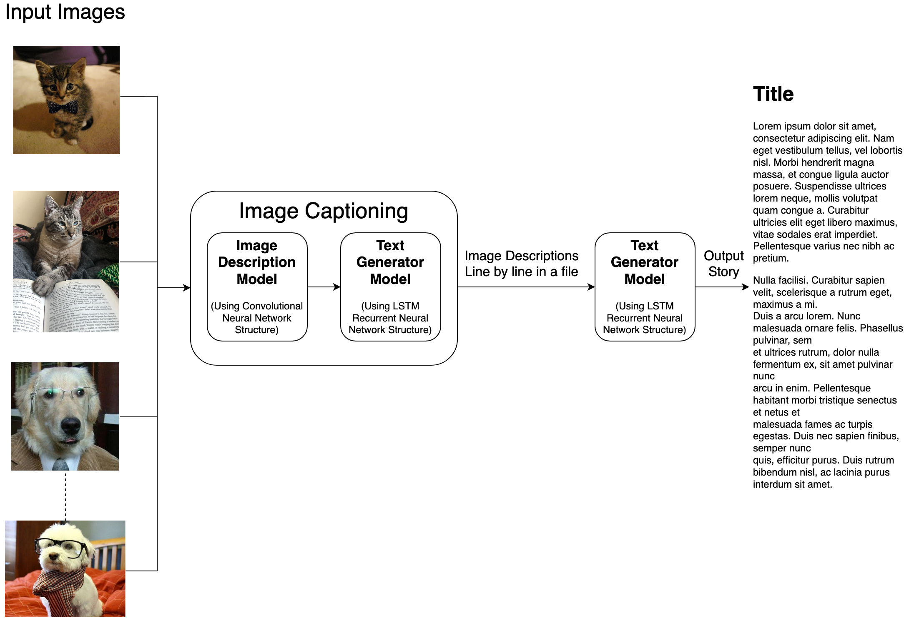
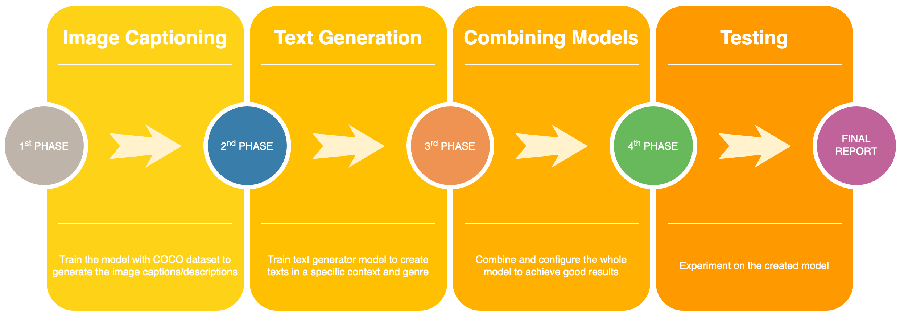

A Picture is Worth a Thousand Words: Gathering Stories from Images through Deep Learning (On going)
Hello there! This project is being developed as in-class term project under CS:5980:002 Deep Learning course in University of Iowa. Please jump into Updates & General Thoughts section to keep updated. Project is being developed in this repository and it is open source.
Teammates
- Zach Amsler, MCS Student, University of Iowa
- Mert Erdemir, MCS Student, University of Iowa
- Anna Keil, MCS Student, University of Iowa
Project Idea
There are many ways to describe an image: captions, summaries, and stories. In this deep learning project, we will explore telling stories through image captions. Much like the books we read, images can have many different interpretations in their meanings and goals through how a story is told. By exploring the various different types of stories told from images, we can further understand how to process and think of images in a creative and abstract way, rather than restraining ourselves to a concrete classification. This can further lead into the expansion of interpretation of real-world objects for machine learning and artificial intelligence applications.
This project will combine application and development of previously existing image datasets and image/text interpretation models to write stories from image captions. We will explore using the COCO dataset for a variety of images and corresponding captions. And we will explore software models which will include methods to produce captions from images and, in turn, stories from these captions, which will be used as seeds for text generation. By applying the COCO dataset to these models, we hope to generate a rich variety of stories from common, everyday images.
Dataset
We can try out different datasets throughout the project and see which one gives better results compared to the others. Since we didn’t specify in which genre/type we will do our storytelling, we are just giving some options for the last step of the pipeline.
-
Producing image captions/descriptions:
The primary dataset to be used is the COCO (Common Objects in Context) dataset, which can be found here: COCO Dataset. Other datasets may include personal photo libraries or images previously gathered from Flickr.
-
Text Generation:
- Different datasets can be used to generate different types of stories. For example, in order to write a movie script we can use the following dataset:
- In order to generate a story text, we can use the following website:
-
In order to generate dialogs, we can use the following dataset:
- Ubuntu Dialog Corpus (Paper)
- For blog post generation:
Software Details
To produce captions from images, we will explore using the Neural Captioning model. This model consists of two major components: feature extraction and a language model. Feature extraction involves the use of deep convolutional neural networks to extract and determine the internal representation of an image, which may or may not involve something entirely obvious to the human viewer. A language model is used to predict the probability of the next word in a given sequence based on the context of the word in the sequence [1]. By combining these two components, we can then generate a descriptive and comprehensive caption based on an image.
To produce stories from captions, we will explore building a text generator. By using the resulting image captions as a seed, we can use a recurrent neural network for feature classification of the text and a LSTM (long-short term memory net) model to generate new text character by character [2].
Papers to Read
Previously existing research regarding the exploration of text description from images focuses primarily on caption generation. In particular, there was a 2015 MSCOCO Image Captioning Challenge in which participants discussed how they rendered a model based on recurrent neural networks (RNN), by pre-processing the image dataset with deep convolutional neural networks (CNN). By using deep CNNs, the image can then be encoded to yield a more intuitive classification and representation to be used in the RNN, which will then use a series of long-short term memory nets (LSTM) to feed the values through based on previously defined values or words. This technique is used widely in the field of deep learning, using deep feedforward techniques [6]. A new sentence/caption is created once a “start” word has been generated, and is then considered complete once a “stop” word has been generated [5]. Ideally, the same idea for the generation of the actual text of the caption can be applied towards developing stories from captions.
References
- Brownlee, J. (2019, August 7). How to Automatically Generate Textual Descriptions for Photographs with Deep Learning. Retrieved from https://machinelearningmastery.com/how-to-caption-photos-with-deep-learning/
- How to Build a Text Generator using Keras in Python. (n.d.). Retrieved from https://www.thepythoncode.com/article/text-generation-keras-python
- Karpathy, A. (2015, May 21). The Unreasonable Effectiveness of Recurrent Neural Networks. Retrieved March 19, 2020, from https://karpathy.github.io/2015/05/21/rnn-effectiveness/
- Show and Tell: image captioning open sourced in TensorFlow. (2016, September 22). Retrieved from https://ai.googleblog.com/2016/09/show-and-tell-image-captioning-open.html
- Vinyals, O., Toshev, A., Bengio, S., & Erhan, D. (2016, September 21). Show and Tell: Lessons Learned from the 2015 MSCOCO Image Captioning Challenge. Retrieved March 19, 2020, from https://arxiv.org/pdf/1609.06647.pdf
- Sutskever, I., Martens, J., & Hinton, G. (2011). Generating Text with Recurrent Neural Networks. Retrieved March 19, 2020, from https://www.cs.utoronto.ca/~ilya/pubs/2011/LANG-RNN.pdf
Progress Milestones
The major milestones for our project involve the generation of captions from images and the generation of stories from these captions, using the models described for Neural Captioning and text generation.
Before the progress report, we will have the dataset and models set-up for ease of experimentation. This will involve integration and application of existing software models mentioned previously. A small subset of the dataset will be tested for any needed software modifications to either improve the accuracy or the speed of the model.
Before the final report, we will test the combined models for most or all of the datasets and report the accuracy and speed of the results for each.
Updates & General Thoughts
03.04.2020: I have started the Image Captioning part of the project. I firstly tried different tools and to find out which one is more advantageous over the others.
I started with NeuralTalk2. It seems really good project and well developed at first glance. However, due to building problems, I couldn't make it work in my machine (MacOSX 10.15.3).
Then, I found another image captioning library developed by PyTorch. The problem about the library was that it is only designed for GPU-only. I need something both compatible with CPU
as well as GPU, in order to make it work in our machines. I found a docker image that is compatible with CPUs, but even though I used their pretrained model, it performed very poorly.
There were some docker images, but I was not lucky to make them work again.
Until this point, according to comments from people, Show and Tell model offered by Google and open-source model in Tensorflow was the best. I decided to give a try to that one.
The only reason I didn't want to move im2txt is that it requires weeks to train and they didn't provide an official pretrained model. Then, thans to some developers out there, I was able
to find a couple of different pretrained model checkpoints.
I was so happy until I see lots of errors in my terminal related to Tensorflow. The checkpoints are created in Tensorflow 0.X or 1.X versions while, I was using 2.X. I have to find out a way
to fix those checkpoints to work on different Tensorflow versions. That's how I come up with the fix_checkpoints.py solution in the repository, thanks to a issue related to the problem. I fixed
my Tensorflow version to 1.15.0 and I was good to go. I got my first results and it was really amazing! I decided to make it more modular and generic by writing some bash scripts to
increase the ease-of-use. I added the multiprocessing feature (which significantly decreased the running time). I chose to write my parser in C++ since it could be faster than Python albeit
the required task is not too complicated. Still it is a source-consuming task. We may need to find another way to deal with this. Check out more details about the implementation from
the GitHub repository.